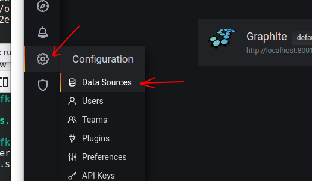
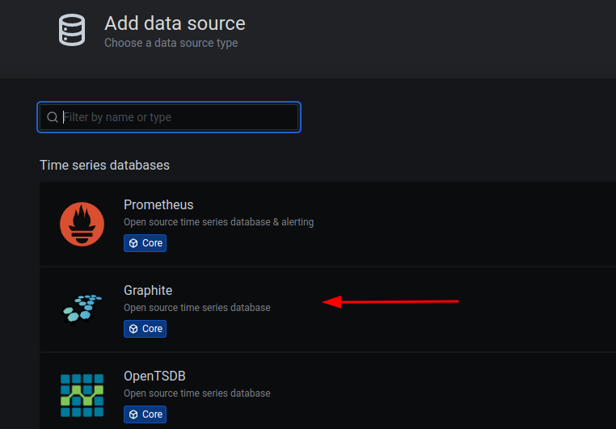
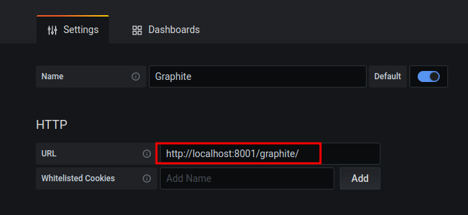

Learn Metrics library, Graphite, Grafana
20 mins
Instructor: Demo this lab
Bring up Grafana UI on the lab VM.
username : admin
password : will be provided (the same password as jupyter)
Follow the screenshots below to add Graphite data source



Make sure the Graphite url is http://localhost:8001/graphite/
Save the datasource and make sure it works fine
Go to Dashboard –> Manage
Click Import
Choose Upload JSON file
Select the following JSON file
file: kafka-labs/src/main/java/x/lab09_metrics/kafka-metrics-dashboard.json
Make sure Dashboard is imported
ConsumerWithMetricsfile : src/main/java/x/lab09_metrics/ConsumerWithMetrics.java
Inspect metrics usage
Run this file in Eclipse
ProducerWithMetricsfile : src/main/java/x/lab09_metrics/ProducerWithMetrics.java
Inspect metrics usage
Run this file in Eclipse
Enjoy the shiny metrics
Click on the PLUS sign on top to create a new panel
Then add a metric (can be a duplicate one) from scratch, so you understand the process